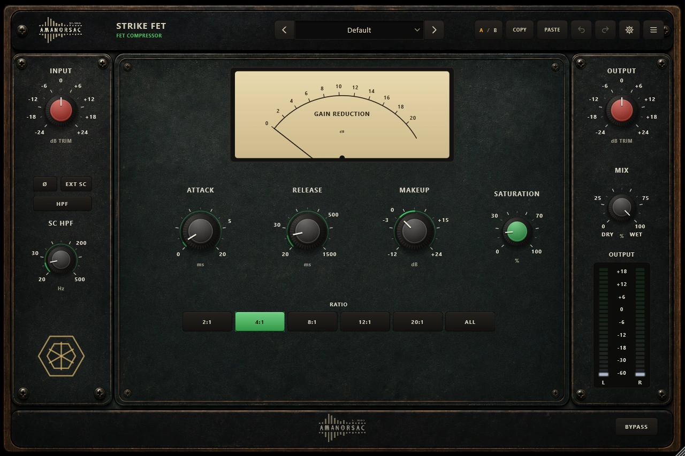
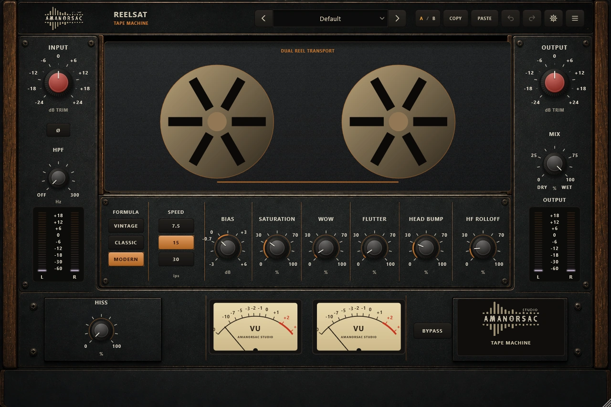
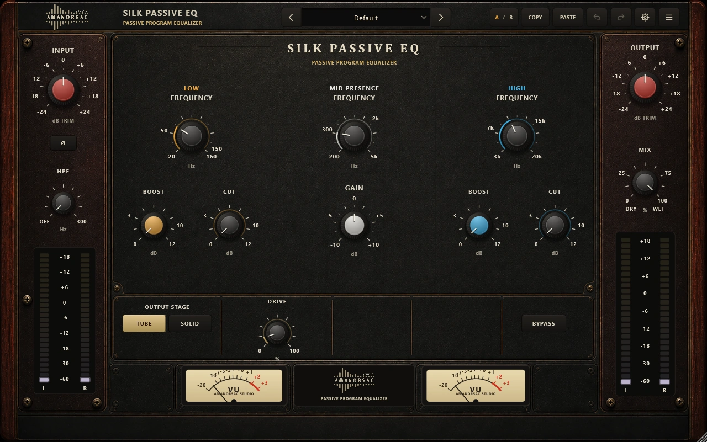
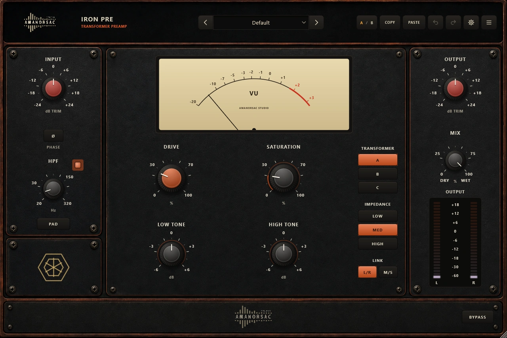
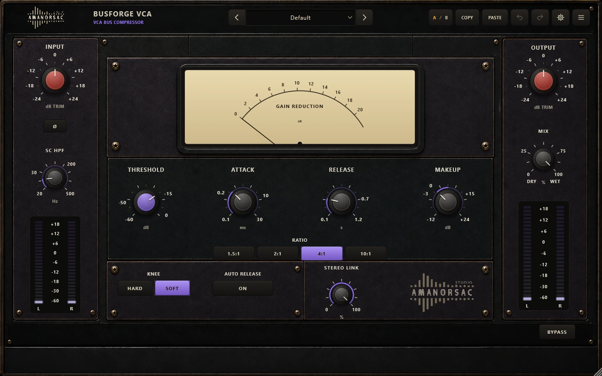
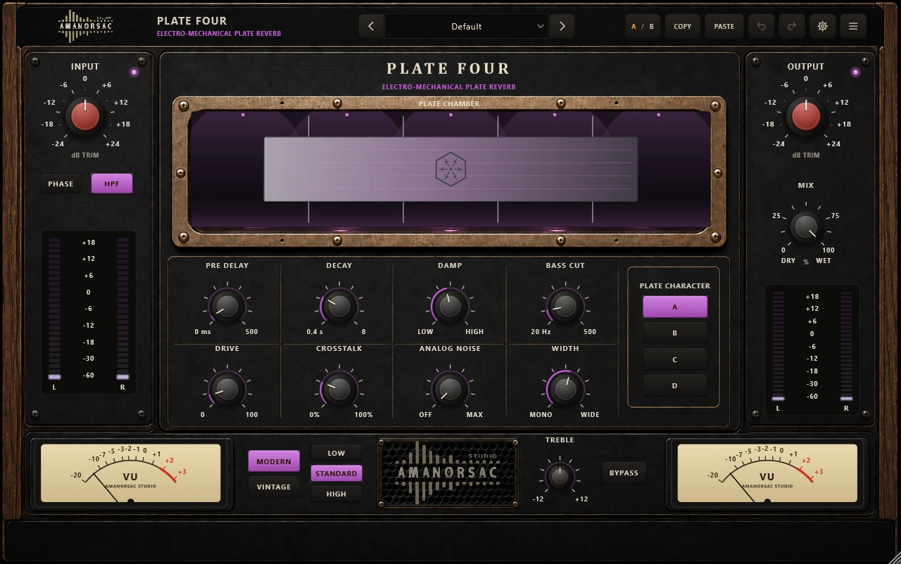
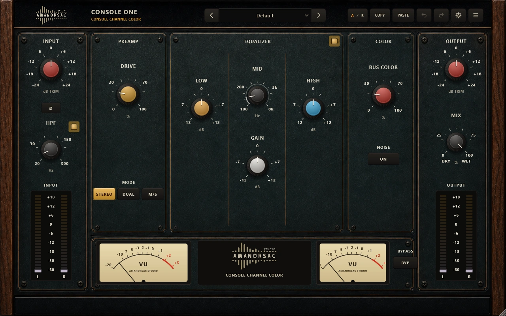
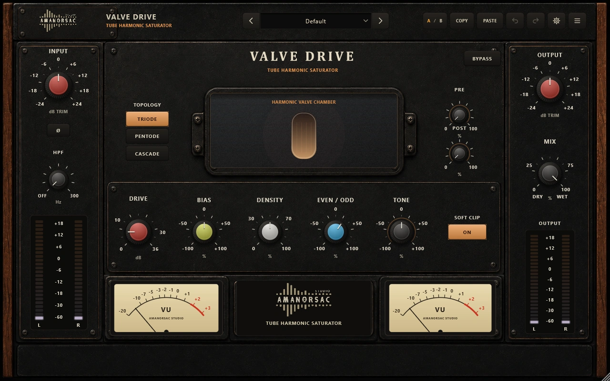
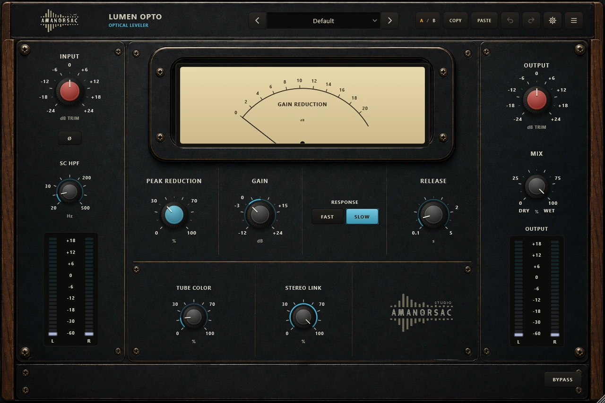

Ten analog machines, built from the ground up, that behave like the desk you wish you owned.
Ten analog processors for the work that actually fills your day: preamps that push, equalisers that flatter, compressors that hold a vocal still, tape and plate that put a record in a room. Every control does something. Nothing is decoration.
Ten separate plug-ins, not one plug-in with ten skins.
AMB Analog — the Amanorsac Mixing Bundle — is ten of them. Each has its own engine, its own faceplate and its own factory bank, and each was measured before it shipped: every parameter proven audible, every output proven finite from 44.1 to 192 kHz, silence proven silent, bypass proven to return exactly what went in. The panels are drawn to hardware proportion, the type is set to be read across a room, and 187 presets are sorted by source so the first five minutes are productive rather than exploratory.
Built, not modelled from a picture.
Every engine is written for the job it does: real RBJ shelves and bells, real Butterworth filter slopes, real oversampling with the latency reported to the host and the dry path delayed to match. Where a control exists on the panel, it is wired to the engine.
Measured before it ships.
An automated audit drives all ten at 44.1, 48, 96 and 192 kHz, at block sizes from 16 to 2048 samples, with every control at its extremes. It proves every parameter changes the sound, the output stays finite and bounded, silence in gives silence out, bypass and mix at nothing return the input, and every factory preset loads and does something.
One key, ten plug-ins.
Buy once, type the key into whichever plug-in you open first, and the whole bundle is licensed on that machine. Two computers per licence, and a Deactivate button when you move to a new one. It keeps working for thirty days without an internet connection.
Presets that are a starting point, not a maze.
187 presets across the bundle, grouped by source, so you open the drawer you need. They ship inside the plug-in: nothing to install, nothing to copy.
The ten
Every one of them, and what it is for.
Ten machines, each with its own engine and its own bank. Nothing here is a re-skin of anything else here.
A01
HERITAGE EQ
Class-A Musical Equalizer
Five bands that flatter before they correct.
A five-band equaliser with true shelves at each end and musical bells between, built for the moves you make on every song: lift the air, take out the box, put the weight back. Sweepable high-pass and low-pass with 18 or 24 dB slopes, four colour characters from clean to tape, and 2x/4x oversampling when you drive it.
Five bands: shelving low and high with adjustable slope, three bells with variable Q, each switchable in and out
Clean, Console, Tube and Tape character with a drive control and auto gain
L/R or M/S processing, wet/dry mix, 18 or 24 dB filter slopes, oversampling to 4x
21 presets

A06
STRIKE FET
FET Compressor
Fast enough to hurt, and an all-buttons mode when it should.
The compressor for attitude: microsecond attack, six ratios including the all-buttons setting, and a saturation control on the way out. Sidechain high-pass and an external key input for when the low end is driving the detector.
Ratios from 2:1 to 20:1 plus All Buttons
Attack from 0.02 ms, release to 1.5 s, sidechain high-pass and external key
Saturation, wet/dry mix and a live gain-reduction VU
18 presets

A04
REELSAT
Tape Machine
Three formulas, three speeds, and the head bump that sells it.
A tape machine with the controls that matter: the formula, the speed, and how hard you hit it. Head bump for the weight, HF roll-off for the top, wow and flutter for the movement, and hiss when the track needs the room noise.
Three tape formulas at 7.5, 15 or 30 ips
Bias, saturation, head bump and HF roll-off shaped per speed
Wow, flutter and optional hiss, with wet/dry mix for parallel tape
19 presets

A09
SILK PASSIVE EQ
Passive Program Equalizer
Boost and cut at once, the way the passive design intended.
A passive program equaliser where boost and cut are separate networks sharing a frequency selector — so boosting and cutting the same band does not cancel, it carves the curve everyone loves. Tube or solid-state output stage with an input drive.
Low boost and cut on separate curves, sweepable mid presence, high boost and cut
Tube or solid-state output stage with input drive
Switchable high-pass, wet/dry mix, full-range frequency selectors
18 presets

A02
IRON PRE
Transformer Preamp
Three transformers, one honest gain stage.
The front end of a good desk: a transformer you choose, an impedance that changes how the source loads it, and a saturation control that goes from a whisper of iron to a broken radio. Pad, polarity, high-pass and a tone pair for the corrections you make while tracking.
Three transformer characters and three input impedances
Drive and saturation, low and high tone, switchable high-pass, pad and polarity
Wet/dry mix and L/R or M/S link for parallel colour on a bus
19 presets

A08
BUSFORGE VCA
VCA Bus Compressor
Glue, in the amount you ask for.
The bus compressor: four ratios, a knee you choose, auto release for programme material, and a sidechain high-pass so the kick stops pulling the whole mix down. Two decibels of this across a mix is usually the whole job.
Threshold, four ratios, attack from 0.1 ms, release with optional auto mode
Soft or hard knee, sidechain high-pass, stereo link
Make-up gain, wet/dry mix for parallel glue, gain-reduction meter
18 presets

A10
PLATE FOUR
Electro-Mechanical Plate Reverb
Four plates, two eras, and a tension control you can hear.
A plate reverb with the mechanics exposed: four plate characters, a tension setting that changes how long and how bright the plate rings, and a modern or vintage transducer era. Bass cut and treble shelf shape the tail, crosstalk and width place it.
Four plate characters, Low/Standard/High tension, Modern or Vintage era
Pre-delay to 500 ms, decay to 8 s, damping, bass cut and treble shelf
Drive, crosstalk, analog noise and width, with wet/dry mix and input trim
19 presets

A03
CONSOLE ONE
Console Channel Color
A channel strip that sounds like the desk it came from.
Preamp, three-band EQ, high-pass and bus colour in the order a console puts them. Push the drive for the harmonic signature, use the EQ for the shape, and add as much or as little of the bus stage as the mix wants.
Preamp drive plus a three-band EQ with sweepable mid, switchable in and out
Bus colour stage with optional analog noise for period-correct grit
Stereo, Dual Mono or M/S operation with a wet/dry mix
18 presets

A05
VALVE DRIVE
Tube Harmonic Saturator
Choose the valve, then choose the harmonics.
Three valve topologies and a balance control that sets how far off centre the stage runs, which is what decides whether you hear even or odd harmonics. Pre and post emphasis put the drive where you want it in the spectrum.
Triode, Pentode and Cascade topologies
Even/odd balance, bias and density for the shape of the distortion
Pre and post emphasis, soft clip, high-pass and wet/dry mix
19 presets

A07
LUMEN OPTO
Optical Leveler
The one you leave on the vocal.
An optical leveller with the program-dependent release that makes a vocal sit still without sounding held. Fast and slow response, a release you can set, a tube colour stage and stereo link for busses.
Optical detector with Fast or Slow response and adjustable release
Peak reduction and make-up gain in the classic arrangement
Sidechain high-pass, tube colour, stereo link and wet/dry mix
18 presets
Presets
187 of them, filed by what you are working on.
Open the drawer for the source in front of you rather than scrolling a list. Every preset also carries tags for source, intent, genre, intensity and character.
Your own presets save alongside the factory ones, as plain XML you can copy between machines. They live in %APPDATA%\Amanorsac Studio\Presets\ under the product's own name.
How it was tested
Every claim on this page was measured, not assumed.
An automated audit drives all ten products at 44.1, 48, 96 and 192 kHz, at block sizes from 16 to 2048 samples, with every control at its extremes. It proves every parameter changes the sound, the output stays finite and bounded, silence in gives silence out, bypass and a mix of nothing return the input untouched, and every factory preset loads and does something.
That last one matters more than it sounds. A bank of presets that load but do nothing is the most common thing wrong with a bundle this size, and it is the kind of thing only a machine will check three hundred times without getting bored.
Specifications
What it needs, and what it does.
Formats
VST3 and Standalone
Platform
Windows 10 and 11, 64-bit. macOS.
Sample rates
44.1 kHz to 192 kHz
Channels
Mono and stereo. Sidechain input on Strike FET.
Interface
Resizable from 1024 to 1920 px wide, fixed aspect
Presets
187 factory presets across the bundle, grouped by source
Preset location
%APPDATA%\Amanorsac Studio\Presets\<product>\
Preset format
.amanorsacpreset, plain XML, portable between machines
Shared across all ten
A/B snapshots, copy and paste between instances, full undo and redo, type a value on any knob, host bypass, host automation, full session recall
Licence
One key unlocks the whole bundle. Two computers per licence, thirty days offline.
AAX is not part of this release.
$39Once, for all ten
Ten machines, one key, two computers.
Everything on this page for thirty-nine dollars: ten plug-ins, 187 presets, and a licence you move yourself when you change machines. A year of updates is included, and the version you have keeps working after that.
No. Ten separate plug-ins, each with its own engine, its own faceplate and its own factory bank. They install together and they appear in your host as ten.
How does one key unlock ten?
Type it into whichever one you open first and the whole bundle is licensed on that machine. Two computers at a time, and each plug-in has a Deactivate button for when you move to a new one.
Does it need the internet?
Once, to activate, and quietly now and then afterwards. Between checks it runs offline for thirty days at a stretch.
Where do my presets go?
Into %APPDATA%\Amanorsac Studio\Presets\, as plain XML you can copy to another machine or send to someone else.
Windows or Mac?
Both. VST3 and Standalone on each, from one purchase and one key. AAX is not part of this release.
What does "measured before it ships" actually mean?
An automated audit runs all ten at four sample rates and a range of block sizes with every control at its extremes, and checks that each parameter is audible, the output stays finite, silence stays silent, bypass returns the input exactly, and every preset loads and changes something.